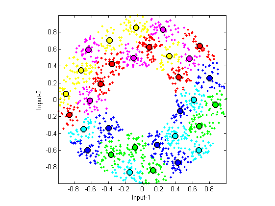

vecQuantize
Vector quantization using LBG method of center splitting
Contents
Syntax
- center=vecQuantize(data, codeBookSize)
- center=vecQuantize(data, codeBookSize, showPlot)
- [center, U]=vecQuantize(data, codeBookSize, ...)
- [center, U, centerHistory]=vecQuantize(data, codeBookSize, ...)
Description
center=vecQuantize(data, codeBookSize) returns the centers (codebook) of k-means via LBG method, where
- data: data matrix where each column is an observation
- codeBookSize: codebook size or number of cluster centers (should be the power of 2)
- center: codebook matrix where each column is a codeword
center=vecQuantize(data, codeBookSize, 1) display the animation and messages during training.
[center, U]=vecQuantize(data, codeBookSize, ...) returns extra info of the partition matrix U.
References
- Y. Linde, A. Buzo, and R.M. Gray, "An Algorithm for Vector Quantizer Design", IEEE Transactions on Communications, vol. 28, pp. 84-94, 1980.
Example
DS=dcData(2); data=DS.input; codeBookSize=2^5; showPlot=1; codebook=vecQuantize(data, codeBookSize, showPlot);
Iteration count = 1/200, distortion = 696.723584 Iteration count = 2/200, distortion = 435.330850 Iteration count = 3/200, distortion = 434.785109 Iteration count = 4/200, distortion = 434.313947 Iteration count = 5/200, distortion = 433.002819 Iteration count = 6/200, distortion = 431.234029 Iteration count = 7/200, distortion = 430.139874 Iteration count = 8/200, distortion = 428.812101 Iteration count = 9/200, distortion = 427.155345 Iteration count = 10/200, distortion = 424.912823 Iteration count = 11/200, distortion = 422.768468 Iteration count = 12/200, distortion = 421.779433 Iteration count = 13/200, distortion = 421.186773 Iteration count = 14/200, distortion = 420.613674 Iteration count = 15/200, distortion = 420.287280 Iteration count = 16/200, distortion = 420.127061 Iteration count = 17/200, distortion = 419.795654 Iteration count = 18/200, distortion = 419.458040 Iteration count = 19/200, distortion = 419.190168 Iteration count = 20/200, distortion = 419.025018 Iteration count = 21/200, distortion = 418.873387 Iteration count = 22/200, distortion = 418.630150 Iteration count = 23/200, distortion = 418.008147 Iteration count = 24/200, distortion = 417.493069 Iteration count = 25/200, distortion = 416.683857 Iteration count = 26/200, distortion = 416.000788 Iteration count = 27/200, distortion = 415.524198 Iteration count = 28/200, distortion = 415.171403 Iteration count = 29/200, distortion = 414.892571 Iteration count = 30/200, distortion = 414.471664 Iteration count = 31/200, distortion = 414.095942 Iteration count = 32/200, distortion = 413.989326 Iteration count = 33/200, distortion = 413.977713 Iteration count = 34/200, distortion = 413.973215 Iteration count = 35/200, distortion = 413.961258 Iteration count = 36/200, distortion = 413.959211 Iteration count = 37/200, distortion = 413.959211 No. of centers = 2, loop count = 37, distortion = 413.959 Iteration count = 1/200, distortion = 413.959211 Iteration count = 2/200, distortion = 155.199494 Iteration count = 3/200, distortion = 154.823047 Iteration count = 4/200, distortion = 154.779330 Iteration count = 5/200, distortion = 154.778066 Iteration count = 6/200, distortion = 154.778066 No. of centers = 4, loop count = 6, distortion = 154.778 Iteration count = 1/200, distortion = 154.778066 Iteration count = 2/200, distortion = 79.125781 Iteration count = 3/200, distortion = 68.153291 Iteration count = 4/200, distortion = 65.520362 Iteration count = 5/200, distortion = 65.071570 Iteration count = 6/200, distortion = 64.826479 Iteration count = 7/200, distortion = 64.776641 Iteration count = 8/200, distortion = 64.767038 Iteration count = 9/200, distortion = 64.761919 Iteration count = 10/200, distortion = 64.760280 Iteration count = 11/200, distortion = 64.758540 Iteration count = 12/200, distortion = 64.756060 Iteration count = 13/200, distortion = 64.756060 No. of centers = 8, loop count = 13, distortion = 64.7561 Iteration count = 1/200, distortion = 64.756060 Iteration count = 2/200, distortion = 38.286548 Iteration count = 3/200, distortion = 37.140456 Iteration count = 4/200, distortion = 36.634233 Iteration count = 5/200, distortion = 36.517275 Iteration count = 6/200, distortion = 36.476492 Iteration count = 7/200, distortion = 36.451521 Iteration count = 8/200, distortion = 36.439699 Iteration count = 9/200, distortion = 36.436250 Iteration count = 10/200, distortion = 36.426961 Iteration count = 11/200, distortion = 36.407433 Iteration count = 12/200, distortion = 36.379614 Iteration count = 13/200, distortion = 36.336612 Iteration count = 14/200, distortion = 36.305180 Iteration count = 15/200, distortion = 36.301725 Iteration count = 16/200, distortion = 36.296059 Iteration count = 17/200, distortion = 36.287003 Iteration count = 18/200, distortion = 36.232127 Iteration count = 19/200, distortion = 36.139995 Iteration count = 20/200, distortion = 36.037474 Iteration count = 21/200, distortion = 35.843999 Iteration count = 22/200, distortion = 35.643854 Iteration count = 23/200, distortion = 35.455904 Iteration count = 24/200, distortion = 35.378961 Iteration count = 25/200, distortion = 35.360988 Iteration count = 26/200, distortion = 35.354012 Iteration count = 27/200, distortion = 35.350876 Iteration count = 28/200, distortion = 35.349457 Iteration count = 29/200, distortion = 35.347801 Iteration count = 30/200, distortion = 35.347801 No. of centers = 16, loop count = 30, distortion = 35.3478 Iteration count = 1/200, distortion = 35.347801 Iteration count = 2/200, distortion = 21.580578 Iteration count = 3/200, distortion = 18.584770 Iteration count = 4/200, distortion = 17.433551 Iteration count = 5/200, distortion = 17.100620 Iteration count = 6/200, distortion = 16.926120 Iteration count = 7/200, distortion = 16.775917 Iteration count = 8/200, distortion = 16.705176 Iteration count = 9/200, distortion = 16.649326 Iteration count = 10/200, distortion = 16.621816 Iteration count = 11/200, distortion = 16.614653 Iteration count = 12/200, distortion = 16.610469 Iteration count = 13/200, distortion = 16.609383 Iteration count = 14/200, distortion = 16.609383 No. of centers = 32, loop count = 14, distortion = 16.6094